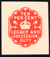

Tax avoidance
| Part of a series on |
| Taxation |
|---|
|  |
| An aspect of fiscal policy |
{kind=link}
Tax avoidance is the legal usage of the tax regime in a single territory to one's own advantage to reduce the amount of tax that is payable by means that are within the law. A tax shelter is one type of tax avoidance, and tax havens are jurisdictions that facilitate reduced taxes.[1] Tax avoidance should not be confused with tax evasion, which is illegal. Both tax evasion and tax avoidance can be viewed as forms of tax noncompliance, as they describe a range of activities that intend to subvert a state's tax system.
Forms of tax avoidance that use legal tax laws in ways not necessarily intended by the government are often criticized in the court of public opinion and by journalists. Many businesses pay little or no tax, and some experience a backlash when their tax avoidance becomes known to the public. Conversely, benefiting from tax laws in ways that were intended by governments is sometimes referred to as tax planning.[2] The World Bank's World Development Report 2019 on the future of work supports increased government efforts to curb tax avoidance as part of a new social contract focused on human capital investments and expanded social protection.[3]
"Tax mitigation", "tax aggressive", "aggressive tax avoidance" or "tax neutral" schemes generally refer to multiterritory schemes that fall into the grey area between common and well-accepted tax avoidance, such as purchasing municipal bonds in the United States, and tax evasion but are widely viewed as unethical, especially if they are involved in profit-shifting from high-tax to low-tax territories and territories recognised as tax havens.[4] Since 1995, trillions of dollars have been transferred from OECD and developing countries into tax havens using these schemes.[5]
Laws known as a General Anti-Avoidance Rule (GAAR) statutes, which prohibit "aggressive" tax avoidance, have been passed in several countries and regions including Canada, Australia, New Zealand, South Africa, Norway, Hong Kong and the United Kingdom.[6][7] In addition, judicial doctrines have accomplished the similar purpose, notably in the United States through the "business purpose" and "economic substance" doctrines established in Gregory v. Helvering and in the United Kingdom in Ramsay. The specifics may vary according to jurisdiction, but such rules invalidate tax avoidance that is technically legal but is not for a business purpose or is in violation of the spirit of the tax code.[8]
The term "avoidance" has also been used in the tax regulations[examples and source needed] of some jurisdictions to distinguish tax avoidance foreseen by the legislators from tax avoidance exploiting loopholes in the law such as like-kind exchanges.[9][10][correct example needed] The US Supreme Court has stated, "The legal right of an individual to decrease the amount of what would otherwise be his taxes or altogether avoid them, by means which the law permits, cannot be doubted".
Tax evasion, on the other hand, is the general term for efforts by individuals, corporations, trusts and other entities to evade taxes by illegal means. Both tax evasion and some forms of tax avoidance can be viewed as forms of tax noncompliance, as they describe a range of activities that are unfavourable to a state's tax system.[11]
According to Joseph Stiglitz (1986), there are three principles of tax avoidance: postponement of taxes, tax arbitrage across individuals facing different tax brackets, and tax arbitrage across income streams facing different tax treatment. Many tax avoidance devices include a combination of the three principles.
The postponement of taxes is the present discounted value of postponed tax is much less than of a tax currently paid. Tax arbitrage across individuals facing different tax brackets or the same individual facing different marginal tax rates at different times is an effective method of reducing tax liabilities within a family. However, according to Stiglitz (1986), differential tax rates may also lead to transactions among individuals in different brackets leading to “tax induced transactions”. The last principle is the tax arbitrage across income streams facing different tax treatment.[12]
Anti-avoidance measures
[edit]An anti-avoidance measure is a rule that prevents the reduction of tax by legal arrangements, where those arrangements are put in place purely to reduce tax, and would not otherwise be regarded as a reasonable course of action.
Legislative measures
[edit]Two kind of anti-avoidance measures exist; General Anti Avoidance Rules (GAAR) and Specific Anti Avoidance Rules (SAAR). The GAAR implies a set of generic anti-avoidance rules, while SAAR targets a specific avoidance practice or technique. Also, there is a set of bilateral measures pursued thorough treaties or double taxation agreements (DTAAs), this can be done via various clauses.[13]
Judicial anti-avoidance measures
[edit]Courts around the world have played an important role in developing SAAR and GAAR measures. But the two guiding principles in judicial anti-avoidance are business purpose rule and substance over form rule. The business purpose rule states that the transaction must serve as a business purpose. Which means that mere tax advantage cannot be the main business purpose. On the other hand, the substance over form principle is wider than the business rule and it is defined by the OECD as the ‘prevalence of economic or social reality over the literal wording of legal provisions’ (Ostwal, T.P.; Vijayaraghavan, Vikram 2010).[13]
EU Anti-Tax Avoidance Package
[edit]The Anti-Tax Avoidance Package is part of the European Commission's agenda as an effort to implement a more effective corporate taxation in the European Union. This package was implemented in 2016 and offers measures to prevent aggressive tax planning and encourage of tax transparency among others. The Anti- Tax Avoidance Package counts with an Anti-Tax avoidance directive, recommendation on Tax Treaties, revised administrative cooperation directive and communication on external strategy.[14]
Anti-Tax Avoidance Directive (ATAD): On 20 June 2016 the European Council adopted the Directive (EU) 2016/1164 which contains five legally binding anti-abuse measures that should be applied as common forms of aggressive tax legislations. The member States must have applied these measures as from 1 January 2019. ATAD contains the following five anti-abuse measures: 1. Interest deductibility, to discourage artificial debt arrangements which are design to minimise taxes, 2. Exit taxation, for preventing the avoidance of taxes when companies are re-locating assets, 3. Incorporation of the GAAR for disregarding of non-genuine arrangements, 4. Controlled Foreign Company Rule (CFC), to deter that the profit is transferred to a low or no tax country, 5. Switchover rule, to prevent double non-taxation.[15]
Anti-avoidance measures by country
[edit]Australia
[edit]Australia has a strong tax regime regarding avoidance which applies to large corporate groups, underpinned by the General Anti- Avoidance Rule (GAAR) adopted since 1981 with the Income Tax Act.[16] The multinational anti-avoidance law (MAAL) is an extension of Australia's general anti-avoidance rules. This aims to make multinational enterprises pay their fair share of tax of the profits received and earned in Australia[16]
United States
[edit]Since 1980s there have been six major tax reforms in the US. The first one, in 1981, introduced a variety of tax loopholes. With this, the tax shelter industry boomed, giving rise to a demand for tax reform. The 1986 tax reform was the most accurate attempt at reducing tax avoidance, but then the next reforms of 1993 and 1997 opened new opportunities for tax avoidance and increased incentives of tax avoidance.[17] The 1986 tax law reduced the demand for tax shelters and the opportunities for tax avoidance by constricting the gap between regular rates and the minimum tax rates. Lowering the top marginal rates, restricting the ability to use losses on just one type of income for balancing gains on other income and finally by taxing capital gains with full rates. There was another tax act in 1993, in which the alternative minimum tax rates were increased, also the regular rates, and an increase in the absolute gap for upper-income people. In the 1997 act, a gap between the rates at which capital gains and ordinary income was introduced to all taxpayers. During the 2001 and 2003 tax acts introduced more opportunities for tax avoidance because the gap between the capital gains and ordinary income tax remained the same as both rates were reduced by 5%. Finally, in the 2013 tax act, increased the tax on capital gains and ordinary income to 20 and 39.6% respectively.[17]
Methods
[edit]Country of residence
[edit]A company may choose to avoid taxes by establishing their company or subsidiaries in an offshore jurisdiction (see offshore company and offshore trust). Individuals may also avoid tax by moving their tax residence to a tax haven, such as Monaco, or by becoming perpetual travelers. They may also reduce their tax by moving to a country with lower tax rates.
However, a small number of countries tax their citizens on their worldwide income regardless of where they reside. As of 2012[update], only the United States and Eritrea have such a practice, whilst Finland, France, Hungary, Italy[citation needed] and Spain apply it in limited circumstances. In cases such as the US, taxation cannot be avoided by simply transferring assets or moving abroad.[18]
The United States is unlike almost all other countries in that its citizens and permanent residents are subject to U.S. federal income tax on their worldwide income even if they reside temporarily or permanently outside the United States. U.S. citizens therefore cannot avoid U.S. taxes simply by emigrating from the U.S. According to Forbes magazine some citizens choose to give up their United States citizenship rather than be subject to the U.S. tax system;[19] but U.S. citizens who reside (or spend long periods of time) outside the U.S. may be able to exclude some salaried income earned overseas (but not other types of income unless specified in a bilateral tax treaty) from income in computing the U.S. federal income tax. The 2015 limit on the amount that can be excluded is US$100,800. In addition, taxpayers can exclude or deduct certain foreign housing amounts. They may also be entitled to exclude from income the value of meals and lodging provided by their employer.[20] Some American parents do not register their children's birth abroad with American authorities, because they do not want their children to be required to report all earnings to the IRS and pay American taxes for their entire lives, even if they never visit the United States.[21]
Double taxation
[edit]Most countries impose taxes on income earned or gains realized within that country regardless of the country of residence of the person or firm. Most countries have entered into bilateral double taxation treaties with many other countries to avoid taxing nonresidents twice—once where the income is earned and again in the country of residence (and perhaps, for U.S. citizens, taxed yet again in the country of citizenship)—however, there are relatively few double-taxation treaties with countries regarded as tax havens.[22] To avoid tax, it is usually not enough to simply move one's assets to a tax haven. One must also personally move to a tax haven (and, for U.S. citizens, renounce one's citizenship) to avoid tax.
Legal entities
[edit]The examples and perspective in this section may not represent a worldwide view of the subject. (April 2015) |
Without changing country of residence (or, if a U.S. citizen, without giving up one's citizenship), personal taxation may be legally avoided by the creation of a separate legal entity to which one's property is donated. The separate legal entity is often a company, trust, or foundation. These may also be located offshore, such as in the case of many private foundations. Assets are transferred to the new company or trust so that gains may be realized, or income earned, within this legal entity rather than earned by the original owner. If assets are later transferred back to an individual, then capital gains taxes would apply on all profits. Also income tax would still be due on any salary or dividend drawn from the legal entity.
For a settlor (creator of a trust) to avoid tax there may be restrictions on the type, purpose and beneficiaries of the trust. For example, the settlor of the trust may not be allowed to be a trustee or even a beneficiary and may thus lose control of the assets transferred and/or may be unable to benefit from them.
Legal vagueness
[edit]Tax results depend on definitions of legal terms which are usually vague. For example, vagueness of the distinction between "business expenses" and "personal expenses" is of much concern for taxpayers and tax authorities. More generally, any term of tax law has a vague penumbra, and is a potential source of tax avoidance.[23]
Tax shelters
[edit]The examples and perspective in this section may not represent a worldwide view of the subject. (April 2015) |
Tax shelters are investments that allow, and purport to allow, a reduction in one's income tax liability. Although things such as home ownership, pension plans, and Individual Retirement Accounts (IRAs) can be broadly considered "tax shelters", insofar as funds in them are not taxed, provided that they are held within the Individual Retirement Account for the required amount of time, the term "tax shelter" was originally used to describe primarily certain investments made in the form of limited partnerships, some of which were deemed by the U.S. Internal Revenue Service to be abusive.
The Internal Revenue Service and the United States Department of Justice have recently teamed up to crack down on abusive tax shelters. In 2003 the Senate's Permanent Subcommittee on Investigations held hearings about tax shelters which are entitled U.S. tax shelter industry: the role of accountants, lawyers, and financial professionals. Many of these tax shelters were designed and provided by accountants at the large American accounting firms.
Examples of U.S. tax shelters include: Foreign Leveraged Investment Program (FLIP) and Offshore Portfolio Investment Strategy (OPIS). Both were devised by partners at the accounting firm, KPMG. These tax shelters were also known as "basis shifts" or "defective redemptions."
Prior to 1987, passive investors in certain limited partnerships (such as oil exploration or real estate investment ventures) were allowed to use the passive losses (if any) of the partnership (i.e., losses generated by partnership operations in which the investor took no material active part) to offset the investors' income, lowering the amount of income tax that otherwise would be owed by the investor. These partnerships could be structured so that an investor in a high tax bracket could obtain a net economic benefit from partnership-generated passive losses.
In the Tax Reform Act of 1986 the U.S. Congress introduced the limitation (under 26 U.S.C. § 469) on the deduction of passive losses and the use of passive activity tax credits. The 1986 Act also changed the "at risk" loss rules of 26 U.S.C. § 465. Coupled with the hobby loss rules (26 U.S.C. § 183), the changes greatly reduced tax avoidance by taxpayers engaged in activities only to generate deductible losses.
Transfer mispricing
[edit]Fraudulent transfer pricing, sometimes called transfer mispricing, also known as transfer pricing manipulation,[24] refers to trade between related parties at prices meant to manipulate markets or to deceive tax authorities.
For example, if company A, a food grower in Africa, processes its produce through three subsidiaries: X (in Africa), Y (in a tax haven, usually offshore financial centers) and Z (in the United States). Now, Company X sells its product to Company Y at an artificially low price, resulting in a low profit and a low tax for Company X based in Africa. Company Y then sells the product to Company Z at an artificially high price, almost as high as the retail price at which Company Z would sell the final product in the U.S.. Company Z, as a result, would report a low profit and, therefore, a low tax.
The African Union reports estimates that about 30% of Sub-Saharan Africa's GDP has been moved to tax havens.[25] Solutions include corporate “country-by-country reporting” where corporations disclose activities in each country and thereby prohibit the use of tax havens where real economic activity occurs.[26]
Tax avoiders
[edit]According to a 2022 study, 36% of the profits of multinational firms are shifted to tax havens.[27] If the profits had been reallocated to their domestic source, "domestic profits would increase by about 20% in high-tax European Union countries, 10% in the United States, and 5% in developing countries, while they would fall by 55% in tax havens."[27]
United Kingdom
[edit]HMRC, the UK tax collection agency, estimated that the overall cost of tax avoidance in the UK in 2016-17 was £1.7 billion, of which £0.7 billion was loss of income tax, National Insurance contributions and Capital Gains Tax. The rest came from loss of Corporation Tax, VAT and other direct taxes.[28] This compares to the wider tax gap (the difference between the amount of tax that should, in theory, be collected by HMRC, against what is actually collected) in that year of £33 billion.[28]
Figures published by the Tax Justice Network show that the UK had one of the lowest rates of tax losses due to profit shifting by multinational companies, with the fourth lowest rate out of 102 countries studied.[29] According to the figures, the UK lost £1 billion from profit shifting, around 0.04% of its GDP, coming behind Botswana (0.02%), Ecuador (0.02%) and Sweden (0.004%).[30]
Large companies accused of tax avoidance
[edit]In 2008 it was reported by Private Eye that Tesco utilized offshore holding companies in Luxembourg and partnership agreements to reduce corporation tax liability by up to £50 million a year.[31] Another scheme previously identified by Private Eye involved depositing £1 billion in a Swiss partnership, and then loaning out that money to overseas Tesco stores, so that profit can be transferred indirectly through interest payments. This scheme is reported to remain in operation and is estimated to be costing the UK exchequer up to £20 million a year in corporation tax.[31][32]
In 2011, ActionAid reported that 25% of the FTSE 100 companies avoided taxation by locating their subsidiaries in tax havens. This increased to 98% when using the stricter US Congress definition of tax haven and bank secrecy jurisdictions.[33] In 2016, it was reported in the Private Eye current affairs magazine that four out of the FTSE top 10 companies paid no corporation tax at all.[34]
Tax avoidance by corporations came to national attention in 2012, when MPs singled out Google, Amazon.com and Starbucks for criticism.[35] Following accusations that the three companies were diverting hundreds of millions of pounds in UK profits to secretive tax havens, there was widespread outrage across the UK, followed by boycotts of products by Google, Amazon.com and Starbucks.[36][37] Following the boycotts and damage to brand image, Starbucks promised to move its tax base from the Netherlands to London and to pay HMRC £20million,[38] but executives from Amazon.com and Google defended their tax avoidance as being within the law.
Google has remained the subject of criticism in the UK regarding their use of the 'Double Irish', Dutch Sandwich and Bermuda Black Hole tax avoidance schemes.[39] Similarly, Amazon remains the subject of criticism across the UK and EU for its tax avoidance. In October 2017, the EU ordered Amazon to repay €250 million in illegal state aid to Luxembourg following a 'sweetheart deal' between Luxembourg and Amazon.com enabling the American company to artificially reduce its tax bill.[40] PayPal, EBay, Microsoft, Twitter and Facebook have also been found to be using the Double Irish and Dutch Sandwich schemes. Up to 1,000 individuals in the same year were also discovered to be using K2 to avoid tax.[41]
Other UK active corporations mentioned in relation to tax avoidance in 2015, particularly the Double Irish, Dutch Sandwich and Bermuda Black Hole:
- Technology: Apple, Microsoft, PayPal, EBay, Intel, Yahoo!, Facebook, Uber, Netflix, Hewlett-Packard, IBM and Twitter[42]
- Retail: Boots (who moved their registered office to a Swiss letterbox),[43] Kellogg's,[44] and TopShop[45]
- Football clubs: Manchester United, Birmingham City, Coventry City and Cheltenham Town.[46]
- News: Daily Mail[47]
Other corporations mentioned in relation to tax avoidance in later years have been Vodafone, AstraZeneca, SABMiller, GlaxoSmithKline and British American Tobacco.[34]
Tax avoidance has not always related to corporation tax. A number of companies including Tesco, Sainsbury's, WH Smith, Boots and Marks and Spencer used a scheme to avoid VAT by forcing customers paying by card to unknowingly pay a 2.5% 'card transaction fee', though the total charged to the customer remained the same. Such schemes came to light after HMRC litigated against Debenhams over the scheme during 2005.[48]
Africa lost at least $50 million in taxes. This is more than the amount of foreign development aid. European companies operating in Africa are not all that different from the actions of US companies such as Google, Apple and Amazon do not pay enough taxes because of tax avoidance.[49]
According to the Independent Commission for International Corporate Tax Reform (ICRICT), the ‘GAFA’ (Google, Apple, Facebook and Amazon) belong to the worst tax offenders worldwide. In 2018, Amazon was not charged any corporate taxes in the US for two years in a row, despite its doubling profits. Other multinationals, such as Apple for example, also exploit fiscal loopholes, diverting profits from high tax countries into others with lower corporate tax rates. As these large Internet companies disproportionally profit from the COVID-19 crisis, and the US federal government no longer participates in international corporate taxation agreements, single countries and trading zones are urged to implement fair taxation schemes for these Internet giants.[50]
General anti-avoidance rule
[edit]Since the late 1990s, New Labour consulted on a "general anti-avoidance rule" (GAAR) for taxation, before deciding against the idea. By 2003, public interest in a GAAR surged as evidence of the scale of tax avoidance used by individuals in the financial and other sectors became apparent, though in its 2004 Budget the Labour Government announced a new "disclosure regime" as an alternative, whereby tax avoidance schemes would be required to be disclosed to the revenue departments.[51]
In December 2010, the new Coalition government commissioned a report which would consider whether there should be a general anti-avoidance rule for the UK, which recommended that the UK should introduce such a rule, which was introduced in 2013. The rule prevents the reduction of tax by legal arrangements, where those arrangements are put in place purely to reduce tax, and would not otherwise be regarded as a reasonable course of action.[7]
Following the Panama Papers leak in 2016, Private Eye, The Guardian and other British media outlets noted that Edward Troup, who became executive chair of HM Revenue and Customs, had worked with Simmons & Simmons in 2004 representing corporate tax havens and opposed the GAAR in 1998.[52][53][54]
Public sector appointments
[edit]In January 2012 a review of the tax arrangements of people engaged on public sector appointments was undertaken, in order to "ascertain the extent of arrangements which could allow public sector appointees to minimise their tax payments" and make recommendations accordingly.[55] The review was published on 23 May 2012, advising that:
- the most senior staff in public sector appointments should be on the payroll, unless there are exceptional temporary circumstances;
- through their contracting, departments must be able to seek formal assurance from contractors with off payroll arrangements lasting more than six months and costing over £220 per day that income tax and national insurance obligations were being met. Departments were advised to terminate a contract if that assurance was not provided;
- implementation would be monitored carefully with financial sanctions for departments which did not comply.[55]
Historical tax avoidance
[edit]Window tax
[edit]
One historic example of tax avoidance still evident today was the payment of window tax. It was introduced in England and Wales in 1696 with the aim of imposing tax on the relative prosperity of individuals without the controversy of introducing an income tax.[56] The bigger the house, the more windows it was likely to have, and the more tax the occupants would pay. Nevertheless, the tax was unpopular, because it was seen by some as a "tax on light" (allegedly leading to the phrase daylight robbery) and led property owners to block up windows to avoid it.[57] The tax was repealed in 1851.[58]
Deliberate roof destruction
[edit]Other historic examples of tax avoidance were the deliberate destructions of roofs in Scotland to avoid substantial property taxes. The roof of Slains Castle was removed in 1925, and the building has deteriorated since.[59] The owners of Fetteresso Castle (now restored) deliberately destroyed their roof after World War II in protest at the new taxes.
United States
[edit]The term tax avoidance indicates a situation in which a taxpayer legally minimizes the amount of his income tax owed. This circumstance occurs by declaring as many deductions and credits as permitted or prioritizing investments with tax advantages.[60]
An IRS report indicates that, in 2009, 1,470 individuals earning more than $1,000,000 annually faced a net tax liability of zero or less.[61] Also, in 1998 alone, a total of 94 corporations faced a net liability of less than half the full 35% corporate tax rate and the corporations Lyondell Chemical, Texaco, Chevron, CSX, Tosco, PepsiCo, Owens & Minor, Pfizer, JP Morgan, Saks, Goodyear, Ryder, Enron, Colgate-Palmolive, Worldcom, Eaton, Weyerhaeuser, General Motors, El Paso Energy, Westpoint Stevens, MedPartners, Phillips Petroleum, McKesson and Northrop Grumman all had net negative tax liabilities.[62] Additionally, this phenomenon was widely documented regarding General Electric in early 2011.[63]
Furthermore, a Government Accountability Office study found that, from 1998 to 2005, 55 percent of United States companies paid no federal income taxes during at least one year in a seven-year period it studied.[64][65] A review in 2011 by Citizens for Tax Justice and the Institute on Taxation and Economic Policy of companies in the Fortune 500 profitable every year from 2008 through 2010 stated these companies paid an average tax rate of 18.5% and that 30 of these companies actually had a negative income tax due.[66]
In 2012, Hewlett-Packard lost a lawsuit with the IRS over a "foreign tax credit generator" which was engineered by a division of AIG.[67] Al Jazeera also wrote in 2012 that "Rich individuals and their families have as much as $32 trillion of hidden financial assets in offshore tax havens, representing up to $280bn in lost income tax revenues ... John Christensen of the Tax Justice Network told Al Jazeera that he was shocked by 'the sheer scale of the figures'. ... 'We're talking about very big, well-known brands – HSBC, Citigroup, Bank of America, UBS, Credit Suisse ... and they do it knowing fully well that their clients, more often than not, are evading and avoiding taxes.' Much of this activity, Christensen added, was illegal."[68]
As a result of the tax sheltering, the government responded with Treasury Department Circular 230. In 2010, the Health Care and Education Reconciliation Act of 2010 codified the "economic substance" rule of Gregory v. Helvering (1935).[69]
The US Public Interest Research Group said in 2014 that the United States government loses roughly $184 billion per year due to corporations such as Pfizer, Microsoft and Citigroup using offshore tax havens to avoid paying US taxes. According to PIRG:
- Pfizer paid no US income taxes 2010–2012, despite earning $43 billion. The corporation received more than $2 billion in federal tax refunds. In 2013, Pfizer operated 128 subsidiaries in tax havens and had $69 billion offshore which could not be collected by the Internal Revenue Service (IRS);
- Microsoft maintains five tax haven subsidiaries and held $76.4 billion overseas in 2013, thus saving the corporation $24.4 billion in taxes;
- Citigroup maintained 21 subsidiaries in tax haven countries in 2013, and kept $43.8 billion in offshore jurisdictions, thus saving the corporation an additional $11.7 billion in taxes.[70]
According to an analysis by the Institute on Taxation and Economic Policy, global companies in the US are paying an effective tax rate of about negative 9 percent per annum.[71]
An investigation by ProPublica published in 2021 based on leaked IRS documents revealed techniques by which billionaires accumulated massive wealth while paying lower rates than middle-income people, or no tax, or in some cases getting paid refundable childcare tax credits.[72] These include:
- Instead of a salary taxed at the 37% top rate, accepting stock, which is taxed at the 20% capital gains rate.
- Avoid paying tax on capital gains with the "buy, borrow, die" technique:
- Buy or earn capital assets like stocks and real estate, and then never sell because assets do not count as income until sold.
- Using capital assets as collateral to borrow spending money at interest rates considerably lower than the tax rate; loans are not taxed as income.
- Holding capital assets until after death, when a "step-up in basis" zeroes out the accumulated gains and allows heirs to not pay any capital gains tax.
- Avoid the estate tax by moving money into trusts or charitable foundations before death
- Offset dividend income with the interest paid on loans, or relying on increasing stock prices instead of a dividend
- Offset income with "paper" losses in business operations
- Offset income with charitable contributions
Tax avoidance, albeit legal, is subjected to civil penalties findable in the IRC § 6651 (a)(2);[73] §6665(a)(1);[74] §6665(b)(1);[74] §6662.[75]
There are four main types of penalties:[76][77]
- Due date and extensions of time to file and pay: occurs when the taxpayer fails to present his tax declaration or pay his tax income on the expected time.
- Penalty for failure to file a timely return: is a monetary sanction imposed by the IRS when the taxpayer fails to meet the deadline to file his return. It consists of an increased rate of 5% and not over 25% for every month - or part of it- of payment delay upon the original tax import. If the return was filed with a delay of more than 60 days, the minimum penalty is $435 (for tax returns that had to be filed in 2020) or 100% of the tax required.
- Penalty for failure to timely pay taxes: this penalty is calculated on how long overdue taxes remain unpaid. It consists of an increased rate of 0.5% of the unpaid tax for every month or part of a month in which remains, so that is applied on the total amount of the due tax, and this addiction cannot exceed, in any case, the 25% of the total amount of the unpaid taxes.
- Penalty for failure to pay estimated taxes: in the American tax system, the taxpayer has to pay his tax liability upon his annual earnings or income with estimated tax payments. Whether these estimated tax payments are assumed insufficient by the IRS, in this instance, the taxpayer will be subjected to a penalty for the failure to pay the estimated tax. The taxpayer can avoid this penalty if the amount due by the taxpayer is less than $1,000 or if it was already paid, with the withholds and estimated tax system, at least 90% of the current year's tax or 100% of the previous year's tax.
- Accuracy-related penalties: these sanctions are applied when it can be acknowledged the negligence or disregard of the return's rules, or when there is a substantial understatement (of 10% or $1,000 or 5% or $5,000 for the taxpayers who use section 199 A) of the taxpayer's income. This penalty can be avoided if the taxpayer was in bona fide or can reasonably demonstrate the reasons for failure.
In addition, there are more situations in which the IRS does not impose the penalties discussed above. Instead, they are the so-called reasonable cause exception to the failure to file or pay taxes and consist of:
- fire, natural disaster, or other calamities
- Inability, unrelated to the taxpayer, to obtain the documents necessary for the declaration
- Death, serious illness, incapacity, or unavoidable absence of the taxpayer or a close family member
- Any other reason useful to demonstrate that the taxpayer used the diligence and the prudence ordinarily necessary to fulfill federal tax obligations but could not perform his duties for reasons not dependable on him.
Public opinion
[edit]Tax avoidance may be considered to be the dodging of one's duties to society, or alternatively the right of every citizen to structure one's affairs in a manner allowed by law, to pay no more tax than what is required. Attitudes vary from approval through neutrality to outright hostility. Attitudes may vary depending on the steps taken in the avoidance scheme, or the perceived unfairness of the tax being avoided.[78]
In 2008, the charity Christian Aid published a report, Death and taxes: the true toll of tax dodging, which criticised tax exiles and tax avoidance by some of the world's largest companies, linking tax evasion to the deaths of millions of children in developing countries.[79] However the research behind these calculations has been questioned in a 2009 paper prepared for the UK Department for International Development.[80] According to the Financial Times there is a growing trend for charities to prioritise tax avoidance as a key campaigning issue, with policy makers across the world considering changes to make tax avoidance more difficult.[81]
In 2010, tax avoidance became a hot-button issue in the UK. An organisation, UK Uncut, began to encourage people to protest at local high-street shops that were thought to be avoiding tax, such as Vodafone, Topshop and the Arcadia Group.[82]
In 2012, during the Occupy movement in the United States, tax avoidance for the 99% was proposed as a protest tool.[83]
Prem Sikka, Professor of Accounting at the Essex Business School (University of Essex) and scientific advisor of the Tax Justice Network pointed to a discrepancy between the Corporate Social Responsibility claims of multinational companies and “their internal dynamics aimed at maximising their profits through things like tax avoidance”. He wrote in an article commenting the Lux Leaks publications: “Big corporations and accountancy firms are engaged in organised hypocrisy.”[84]
Fair Tax Mark
[edit]As a response to public opinion regarding tax avoidance, the Fair Tax Mark was established in the UK during 2014 as an independent certification scheme to identify and recognise companies which pay taxes "in accordance with the spirit of all tax laws" and not to use options, allowances, or reliefs, or undertake specific transactions, "that are contrary to the spirit of the law".[85][86]
The Mark is operated by a not-for-profit community benefit society, the Fair Tax Foundation.
Awardees of this mark include The Co-op,[87] SSE, Go-Ahead Group, Ecology Building Society, Lush Cosmetics, Richer Sounds, Scottish Water, United Utilities, Marshalls, several large regional co-operatives (East of England, Midcounties, Scotmid) and The Phone Co-op.
Government and judicial response
[edit]{kind=link}
Tax avoidance reduces government revenue, so governments with a stricter anti-avoidance stance seek to prevent tax avoidance or keep it within limits. The obvious way to do this is to frame tax rules so that there is a smaller scope for avoidance. In practice this has not always been achievable and has led to an ongoing battle between governments amending legislation and tax advisors finding new scope/loopholes for tax avoidance in the amended rules.[citation needed]
To allow prompter response to tax avoidance schemes, the US Tax Disclosure Regulations (2003) require prompter and fuller disclosure than previously required, a tactic which was applied in the UK in 2004.
Some countries such as Canada, Australia, United Kingdom and New Zealand have introduced a statutory General Anti-Avoidance Rule (or General Anti-Abuse Rule, GAAR). Canada also uses Foreign Accrual Property Income rules to obviate certain types of tax avoidance. In the United Kingdom many provisions of the tax legislation (known as "anti-avoidance" provisions) apply to prevent tax avoidance where the main object (or purpose), or one of the main objects (or purposes), of a transaction is to enable tax advantages to be obtained.
In the United States, the Internal Revenue Service distinguishes some schemes as "abusive" and therefore illegal. The Alternative Minimum Tax was developed to reduce the impact of certain tax avoidance schemes. Furthermore, while tax avoidance is in principle legal, if the IRS in its sole judgment determines that tax avoidance is the 'principal purpose' for an expatriation attempt, 'covered expat' status will be applied to the requester, thereby forcing an expatriation tax on worldwide assets to be paid as a condition of expatriation.[88] The IRS presumes a principal purpose of tax avoidance if a taxpayer requesting expatriation has a net worth of $622,000 or more, or has had more than $124,000 in average annual net income tax over the 5 tax years ending before the date of expatriation.
United Kingdom
[edit]In the UK, judicial doctrines to prevent tax avoidance began in IRC v Ramsay (1981) which decided that where a transaction has pre-arranged artificial steps that serve no commercial purpose other than to save tax, the proper approach is to tax the effect of the transaction as a whole. This is known as the Ramsay principle and this case was followed by Furniss v. Dawson (1984) which extended the Ramsay principle. This approach has been rejected in most Commonwealth jurisdictions even in those where UK cases are generally regarded as persuasive. After two decades, there have been numerous decisions, with inconsistent approaches, and both the Revenue authorities and professional advisors remain quite unable to predict outcomes. For this reason this approach can be seen as a failure or at best only partly successful.
In the judiciary, different judges have taken different attitudes. As a generalisation, for example, judges in the United Kingdom before the 1970s regarded tax avoidance with neutrality; but nowadays they may regard aggressive tax avoidance with increasing hostility.
In the UK in 2004, the Labour government announced that it would use retrospective legislation to counteract some tax avoidance schemes, and it has subsequently done so on a few occasions, notably BN66. Initiatives announced in 2010 suggest an increasing willingness on the part of HMRC to use retrospective action to counter avoidance schemes, even when no warning has been given.[89]
The UK Government has pushed the initiative led by the Organisation for Economic Co-operation and Development (OECD) on base erosion and profit shifting.[90] In the 2015 Autumn Statement, Chancellor George Osborne announced that £800m would be spent on tackling tax avoidance in order to recover £5 billion a year by 2019–20. In addition, large companies will now have to publish their UK tax strategies and any large businesses that persistently engage in aggressive tax planning will be subject to special measures.[91] With these policies, Osborne has claimed to be at the forefront of combating tax avoidance.[92] However, he has been criticised over his perceived inaction on enacting policies set forth by the OECD to combat tax avoidance.[34]
In April 2015, the Chancellor George Osborne announced a tax on diverted profits, quickly nicknamed the "Google Tax" by the press, designed to discourage large companies moving profits out of the UK to avoid tax.[93] In 2016, Google agreed to pay back £130m of tax dating back to 2005 to HMRC, which said it was the "full tax due in law".[94] However, this amount of tax has been criticised by Labour, with ex Labour leader Jeremy Corbyn saying that the rate of tax paid by Google only amounted to 3%.[94] Former Liberal Democrat Business Secretary Vince Cable also said Google had "got off very, very lightly", and Osborne "made a fool of himself" by hailing the deal as a victory.[94] Although claiming that it was "absurd" to lay blame onto Google for tax avoidance, saying that EU member states should "[compete] with each other to offer firms the lowest corporate tax rates", Conservative MP Boris Johnson said it was a "good thing" for corporations to pay more tax.[95] However, Johnson said he did not want tax rates to go up or for European Union countries to do this in unison.[95]
See also
[edit]- Fair Tax Town movement
- Gregory v. Helvering
- Criticism of Apple Inc.#Taxes
- Criticism of Google#Tax evasion
- Corruption in Finland#Tax avoidance
General:
- Base erosion and profit shifting
- Capital flight
- Gaming the system
- Irish Section 110 SPVs
- List of foundations established in Vaduz
- Tax noncompliance
- Luxembourg Leaks
- Swiss Leaks
- Singapore Sling (tax avoidance)
- Panama Papers
- Paradise Papers
- Conduit and Sink OFCs
Further reading
[edit]- Emmanuel Saez and Gabriel Zucman. 2019. The Triumph of Injustice: How the Rich Dodge Taxes and How to Make Them Pay. W.W. Norton.
References
[edit]- ^ Dyreng, Scott D.; Hanlon, Michelle; Maydew, Edward L. (2008). "Long‐Run Corporate Tax Avoidance". The Accounting Review. 83: 61–82. CiteSeerX 10.1.1.638.2292. doi:10.2308/accr.2008.83.1.61.
- ^ Back, Philippa Foster (23 April 2013). "Avoiding tax may be legal, but can it ever be ethical?". The Guardian. ISSN 0261-3077. Retrieved 17 March 2016.
- ^ "World Development Report 2019: The Changing Nature of Work". World Bank. Retrieved 2022-08-02.
- ^ "MPs publish report on Google's tax avoidance". UK Parliament.
- ^ Jesse Drucker (21 October 2010). "Google 2.4% Rate Shows How $60 Billion Is Lost to Tax Loopholes". Bloomberg.com.
- ^ UK’s general anti-avoidance rule process on schedule. T Magazine. Archived 20 October 2017 at the Wayback Machine
- ^ a b "Tax avoidance: general anti-abuse rule guidance - latest version". GOV.UK. July 16, 2021.
- ^ For example, a Canadian organization describes Canada's law, first passed in 1988 in Section 245 of the Canada's federal income tax act (described here), as invalidating the tax consequences of a tax avoidance transaction if "not conducted for any primary purpose other than to obtain a tax benefit".
- ^ "HM Revenue & Customs, Tempted by Tax Avoidance?" (PDF). GOV.UK. Retrieved 6 April 2016.
- ^ David Kocieniewski (6 January 2013). "Major Companies Push the Limits of a Tax Break". The New York Times. Retrieved 7 January 2013.
With hundreds of thousands of transactions a year, it is hard to gauge the true cost of the tax break for so-called like-kind exchanges, like those used by Cendant, General Electric and Wells Fargo.
- ^ Michael Wenzel (2002). "The Impact of Outcome Orientation and Justice Concerns on Tax Compliance" (PDF). Journal of Applied Psychology: 4–5. Archived from the original (PDF) on 15 June 2005. Retrieved 28 November 2011.
When taxpayers try to find loopholes with the intention to pay less tax, even if technically legal, their actions may be against the spirit of the law and in this sense considered noncompliant. The present research will deal with both evasion and avoidance and, based on the premise that either is unfavorable to the tax-system and uncooperative towards the collective, subsume both under the concept of tax non-compliance.
{{cite journal}}: Cite journal requires|journal=(help) - ^ Stiglitz, Joseph. "The General Theory of Tax Avoidance" (PDF). National Bureau of Economic Research. Retrieved 21 April 2021.
- ^ a b Ostwal, T.P.; Vijayaraghavan, Vikram (2010). "Anti-Avoidance Measures". National Law School of India Review. 22 (2): 59–103. ISSN 0974-4894. JSTOR 44283791.
- ^ Anonymous (13 September 2016). "Anti Tax Avoidance Package". Taxation and Customs Union - European Commission. Retrieved 26 April 2021.
- ^ PricewaterhouseCoopers. "ATAD (Anti-Tax Avoidance Directive)". PwC. Retrieved 22 April 2021.
- ^ a b Office, Australian Taxation. "A strong domestic tax regime". www.ato.gov.au. Retrieved 21 April 2021.
- ^ a b Stiglitz; Rosengard, Joseph; Jay (2000). Economics of the Public Sector. W.W Norton & Company. pp. 709–743.
{{cite book}}: CS1 maint: multiple names: authors list (link) - ^ Moran Harari, Markus Meinzer and Richard Murphy (October 2012) "Financial Secrecy, Banks and the Big 4 Firms of Accountants" Archived 7 April 2016 at the Wayback Machine Tax Justice Network
- ^ "The new refugees. (Americans who give up citizenship to save on taxes)". Forbes. 21 November 1994. Archived from the original on 27 February 2006. Retrieved 23 December 2006.
- ^ "Foreign Earned Income Exclusion", Internal Revenue Service, United States Department of the Treasury.
- ^ Panozzo, Chantal (18 February 2015). "When American Expats Don't Want Their Kids to Have U.S. Citizenship". Wall Street Journal.
- ^ There are certain well-known exceptions to this: Cyprus has a heavily exploited double taxation relief treaty with Russia; another frequently used treaty is the double taxation relief treaty between Mauritius and India. There are also a number of other less well known and less frequently utilized treaties, such as the one between the British Virgin Islands and Switzerland.
- ^ "Pasternak M., and Rico C., Tax Interpretation, Planning, and Avoidance: Some Linguistic Analysis, 23 Akron Tax Journal, 33 (2008)" (PDF).
- ^ "Transfer Pricing". Tax Justice Network. Taxjustice Network. Archived from the original on 13 October 2012. Retrieved 9 August 2012.
- ^ Mathiason, Nick (21 January 2007). "Western bankers and lawyers 'rob Africa of $150bn every year'". The Guardian. London. Retrieved 5 July 2011.
- ^ Sharife, Khadija (18 June 2011). "'Transparency' hides Zambia's lost billions". Al-Jazeera. Retrieved 26 July 2011.
- ^ a b Tèrslèv, Thomas; Wier, Ludvig; Zucman, Gabriel (2022). "The Missing Profits of Nations". The Review of Economic Studies. 90 (3): 1499–1534. doi:10.1093/restud/rdac049. ISSN 0034-6527.
- ^ a b "Measuring tax gaps 2018 edition" (PDF).
- ^ "New estimates reveal the extent of tax avoidance by multinationals". 22 March 2017.
- ^ "TJN Profit Shifting Tax Loss Estimates". Google Docs.
- ^ a b David Leigh (14 June 2008). "Government outlaws tax avoidance schemes". The Guardian. UK.
- ^ Murphy, Richard. "Tesco: tax avoiding, again (this time it's Luxembourg)". Funding the Future.
- ^ Lawrence, Felicity (11 October 2011). "Quarter of FTSE 100 subsidiaries located in tax havens". The Guardian. London.
- ^ a b c "Why multinationals love Generous George". Private Eye. No. 1410. 24 January 2016. Archived from the original on 24 January 2016. Retrieved 24 January 2016.
- ^ Rajeev Syal. "MPs attack Amazon, Google and Starbucks over tax avoidance". The Guardian.
- ^ Rajeev Syal. "Amazon, Google and Starbucks accused of diverting UK profits". The Guardian.
- ^ Juliette Garside. "Amazon UK boycott urged after retailer pays just £4.2m in tax". The Guardian.
- ^ "Starbucks suffers first ever drop in UK sales after tax criticism". Irish Times. 24 April 2014. Retrieved 8 September 2020.
- ^ Williams, Christopher (10 December 2014). "'Google Tax' targets 'double Irish' tax avoidance". The Daily Telegraph. London. Archived from the original on 2022-01-12.
- ^ Rankin, Jennifer (4 October 2017). "Amazon ordered to repay €250m by EU over 'illegal tax advantages' This article is more than 2 yea". The Guardian. Retrieved 8 September 2020.
- ^ Mostrous, Alexi. "Times investigation: the tax avoiders".
- ^ Simon Bowers. "US tech giants launch fierce fightback against global tax avoidance crackdown". The Guardian.
- ^ "Boris Johnson enters Boots v Labour tax row". BBC News. 3 February 2015.
- ^ Paul, Mark (7 April 2015). "Kellogg's pays €7m tax on €7.1bn sales moved through State". The Irish Times. Retrieved 8 September 2020.
- ^ The Emperor's New Clothes (2015 film)
- ^ Hyde, Dan (17 February 2015). "Ferguson faces bill for film 'tax dodge'". The Daily Telegraph. London. Archived from the original on 2022-01-12.
- ^ David Leigh. "A who's who of Britain's legal offshore tax avoidance". The Guardian.
- ^ Brooks, Richard (2013). The Great Tax Robbery. London: Oneworld. p. 297. ISBN 978-1-78074-371-4.
- ^ "Africa's problem with tax avoidance | DW | 19 April 2019". DW.COM. Retrieved 13 March 2020.
- ^ Joly E. (7 July 2020). "Time to tackle the tax dodgers". Social Europe. Retrieved 30 July 2020.
- ^ Steely, Anthony (15 May 2015). "Tax avoidance: a General Anti-Avoidance Rule - background history (1997- 2010)" (PDF). House of Commons. No. BRIEFING PAPER Number 02956. House of Commons Library. p. 3. Archived from the original (PDF) on 5 May 2016. Retrieved 20 April 2016.
- ^ "New Troup movements== at HMRC". Private Eye. No. 1413. 4 March 2016. Archived from the original on 21 March 2016. Retrieved 20 April 2016 – via the Wayback Machine.
- ^ Booth, Robert (11 April 2016). "Edward Troup: from tax haven adviser to leading HMRC's Panama inquiry". The Guardian. Retrieved 20 April 2016.
- ^ Sridharan, Vasudevan (11 April 2016). "Panama Papers: HMRC boss Edward Troup was partner at law firm that represented Ian Cameron's offshore fund". International Business Times UK. Retrieved 20 April 2016.
- ^ a b Cabinet Office, Procurement Policy Note – Tax Arrangements of Public Appointees - Action Note 07/12 24 August 2012, accessed 8 February 2021
- ^ Herber, Mark D (1997). Ancestral Trails: The complete guide to British genealogy and family history. Sutton Publishing Ltd. ISBN 978-0-7509-1418-5. p. 416
- ^ Geoff Harley (2002). Roles and perspectives in the law: Essays in honour of Sir Ivor Richardson. p. 338. ISBN 9780864734488.
- ^ Encyclopædia Britannica (1911), vol. 28, p. 713.
- ^ "Slains Castle". Buildings at Risk Register for Scotland. Royal Commission on the Ancient and Historical Monuments of Scotland. Retrieved 17 October 2012.
- ^ George S.K., The fine and hazy line between tax avoidance and tax evasion UNCOURT 19,(2018)
- ^ "IRS report containing complete income tax data for FY2009" (PDF).
- ^ "Direct contact met de Belastingadviseur". Voor al uw belastingv (in Dutch). Belastingtelefoon. 1 July 2010. Archived from the original on 9 March 2017. Retrieved 8 March 2017.
- ^ "G.E.’s Strategies Let It Avoid Taxes Altogether". The New York Times. 25 March 2011.
- ^ "U.S. Business Has High Tax Rates but Pays Less". The New York Times. 3 May 2011.
- ^ "GAO report "Comparison of the Reported Tax Liabilities of Foreign- and U.S.-Controlled Corporations, 1998–2005"" (PDF).
- ^ Riley, Charles (3 November 2011). "Many companies pay no income taxes, study finds". CNNMoney.com. Retrieved 3 November 2011.
- ^ HP Loses Battle with IRS Over Tax Shelter Designed by AIG. Insurance Journal.
- ^ "Super rich hiding up to $32 trillion offshore". Al Jazeera. 23 July 2012.
- ^ Rose CA. Tax Lawyer’s Dilemma: Recent Developments Heighten Tax Lawyer Responsibilities and Liabilities Archived 20 December 2012 at the Wayback Machine. Columbia Business Law Review. Volume 2011, Issue 1.
- ^ "Picking Up the Tab 2014". U.S. PIRG. 15 April 2014.
- ^ Ingraham, Christopher (5 April 2021) "Dozens of America’s biggest businesses paid no federal income tax — again" The Washington Post. Retrieved 30 April 2021.
- ^ Jesse Eisinger; Jeff Ernsthausen; Paul Kiel (8 June 2021). "The Secret IRS Files: Trove of Never-Before-Seen Records Reveal How the Wealthiest Avoid Income Tax".
- ^ "26 U.S. Code § 6651 - Failure to file tax return or to pay tax". LII / Legal Information Institute.
- ^ a b "26 U.S. Code § 6665 - Applicable rules". LII / Legal Information Institute.
- ^ "26 U.S. Code § 6662 - Imposition of accuracy-related penalty on underpayments". LII / Legal Information Institute.
- ^ Craig D. Bell and Christopher S. Rizek. "Overview of Civil Tax Penalties". 60 Ann. Tax. Conf (2014).
- ^ "20.1.1 Introduction and Penalty Relief | Internal Revenue Service". www.irs.gov.
- ^ "Jimmy Carr and the morality of tax avoidance". BBC News. 21 June 2012.
- ^ O'grady, Sean (12 May 2008). "Tax evasion 'costs lives of 5.6m children'". The Independent. London. Archived from the original on 17 May 2008.
- ^ Fuest, Clemens; Riedel, Nadine (19 June 2009). "Tax evasion, tax avoidance and tax expenditures in developing countries: A review of the literature" (PDF). Oxford: Oxford University Centre for Business Taxation. Archived from the original (PDF) on 13 January 2012. Retrieved 21 October 2011.
{{cite journal}}: Cite journal requires|journal=(help) - ^ Vanessa Houlder (8 November 2010). "Tax claims hit reputation as well as coffers". Financial Times. Archived from the original on 2022-12-10. Retrieved 9 November 2010.
- ^ Lewis, Paul; Taylor, Matthew; Gabbatt, Adam; Jeffery, Simon (3 December 2010). "UK Uncut protesters spied upon by undercover police". The Guardian. London. Retrieved 30 December 2010.
- ^ Cohn, Emily (6 April 2012). "TaxKilla: Tax Strategy For The 99 Percent, Taken From The 1 Percent". Huffington Post. Retrieved 22 September 2012.
- ^ The conversation, Luxembourg leaks reveal the organised hypocrisy of the modern corporation, 10 November 2014
- ^ "What's the Fair Tax Mark? - Fair Tax Mark".
- ^ Scott, Craig (20 February 2014). "Fair Tax Mark to reward tax justice" – via The Guardian.
- ^ "Open about tax".
- ^ "Expatriation Tax | Internal Revenue Service". www.irs.gov. Archived from the original on 7 February 2017.
- ^ HMRC goes on £1bn retro warpath Archived 21 February 2010 at the Wayback Machine, Accountancy Age, 18 February 2010
- ^ "2013: Has the Chancellor Delivered a Budget for Business? - CFO Insight". www.cfo-insight.com. Archived from the original on 5 November 2013.
- ^ "Autumn Statement 2015: Changes to bring in £5bn a year from tax avoidance". CityAM. November 25, 2015.
- ^ Szu Ping Chan (9 October 2015). "Taxes must be paid, says George Osborne, as he backs crackdown on havens". The Daily Telegraph. Lima. Archived from the original on 2022-01-12. Retrieved 24 January 2016.
George Osborne has warned that companies which dodge tax will face the full force of the law, as he pledged to implement new rules designed to close international loopholes and end tax havens.
- ^ "Budget 2015: 'Google Tax' introduction confirmed". BBC News. 18 March 2015.
- ^ a b c "Google tax: David Cameron defends £130m UK tax deal". BBC News. 27 January 2016. Retrieved 27 January 2016.
- ^ a b Stone, Jon (26 January 2016). "It is 'absurd' to blame Google for not paying their taxes, Boris Johnson says". The Independent. Archived from the original on 2022-05-26. Retrieved 27 January 2016.
External links
[edit]- Tax Avoidance collected news and commentary at The Guardian
- Fact File: Tax Avoidance, The Independent